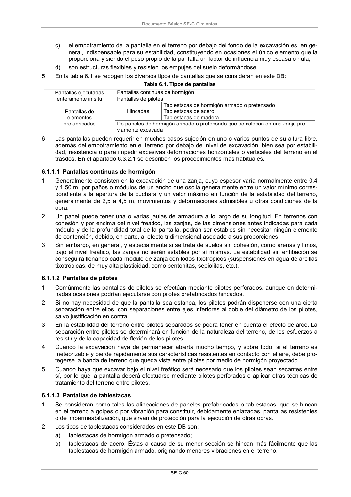

DB-SE-C Cimientos · edición 2019-12-20 · capa oficial
Documento DB-SE-C-oficial · SHA-256 del PDF a71133f4b0dca253e45ea3071c70f2a512354bcc5cd841bf89b1a502f567ac5e
Copia fiel del PDF fuente · Fuente oficial
Ficha de la disposición en la fuente oficial
Formatos: JSON del segmento · Markdown
6.1.1.2 Pantallas de pilotes 1 Comúnmente las pantallas de pilotes se efectúan mediante pilotes perforados, aunque en determi- nadas ocasiones podrían ejecutarse con pilotes prefabricados hincados. 2 Si no hay necesidad de que la pantalla sea estanca, los pilotes podrán disponerse con una cierta separación entre ellos, con separaciones entre ejes inferiores al doble del diámetro de los pilotes, salvo justificación en contra. 3 En la estabilidad del terreno entre pilotes separados se podrá tener en cuenta el efecto de arco. La separación entre pilotes se determinará en función de la naturaleza del terreno, de los esfuerzos a resistir y de la capacidad de flexión de los pilotes. 4 Cuando la excavación haya de permanecer abierta mucho tiempo, y sobre todo, si el terreno es meteorizable y pierde rápidamente sus características resistentes en contacto con el aire, debe pro- tegerse la banda de terreno que queda vista entre pilotes por medio de hormigón proyectado. 5 Cuando haya que excavar bajo el nivel freático será necesario que los pilotes sean secantes entre sí, por lo que la pantalla deberá efectuarse mediante pilotes perforados o aplicar otras técnicas de tratamiento del terreno entre pilotes.
